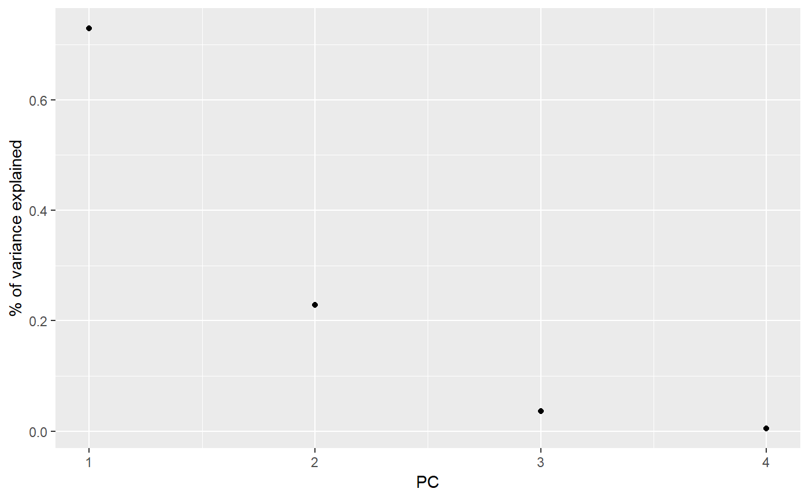
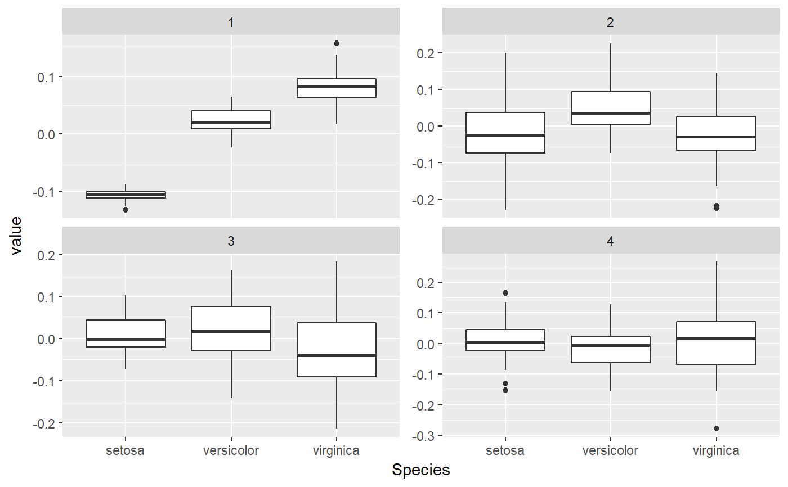

A very thin wrapper around tidy_svd().
These methods tidy the U, D, and V matrices returned by the
svd() functions into a tidy format. Because svd returns
lists without classes, this function has to be called by
tidy.list() when it recognizes a list as an SVD.
tidy_irlba(x, ...) tidy_svd(x, matrix = "u", ...)
| x | list containing d, u, v components, returned from |
|---|---|
| ... | Extra arguments (not used) |
| matrix | which of the u, d or v matrix to tidy |
An SVD object contains a decomposition into u, d, and v matrices, such that
u
gives the original matrix. This tidier gives a choice of which matrix to tidy.
When matrix = "u", each observation represents one pair of row and
principal component, with variables:
Number of the row in the original data being described
Principal component
Loading of this principal component for this row
PCAn integer vector indicating the principal component
std.devStandard deviation explained by this PC
percentPercentage of variation explained. This will be inaccurate for irlba objects due to the SVD truncation.
cumulativeCumulative percentage of variation explained
Column of original matrix described
Principal component
Value of this PC for this column
Note that SVD is only equivalent to PCA on centered data.
svd(), irlba::irlba() tidy.list()
svd(), irlba::irlba(), tidy.list(), tidy_irlba()
#> # A tibble: 6 x 3 #> row PC value #> <int> <int> <dbl> #> 1 1 1 -0.108 #> 2 2 1 -0.0995 #> 3 3 1 -0.113 #> 4 4 1 -0.110 #> 5 5 1 -0.114 #> 6 6 1 -0.0992#> # A tibble: 4 x 4 #> PC std.dev percent cumulative #> <int> <dbl> <dbl> <dbl> #> 1 1 20.9 0.730 0.730 #> 2 2 11.7 0.229 0.958 #> 3 3 4.68 0.0367 0.995 #> 4 4 1.76 0.00518 1#> # A tibble: 6 x 3 #> column PC value #> <int> <int> <dbl> #> 1 1 1 0.521 #> 2 2 1 -0.269 #> 3 3 1 0.580 #> 4 4 1 0.565 #> 5 1 2 -0.377 #> 6 2 2 -0.923library(ggplot2) library(dplyr) ggplot(tidy_d, aes(PC, percent)) + geom_point() + ylab("% of variance explained")tidy_u %>% mutate(Species = iris$Species[row]) %>% ggplot(aes(Species, value)) + geom_boxplot() + facet_wrap(~ PC, scale = "free_y")